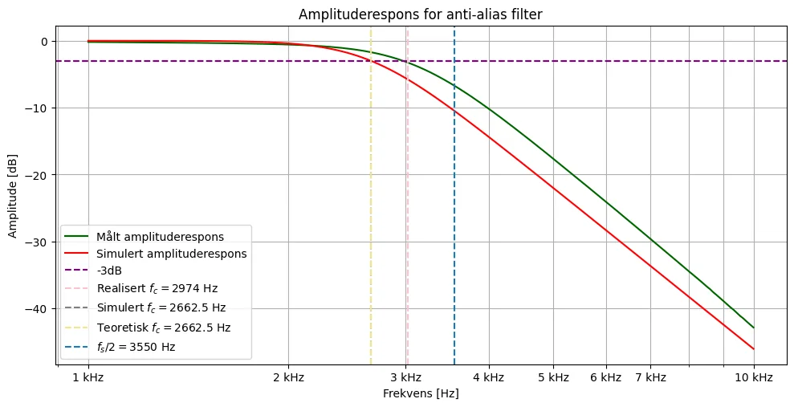
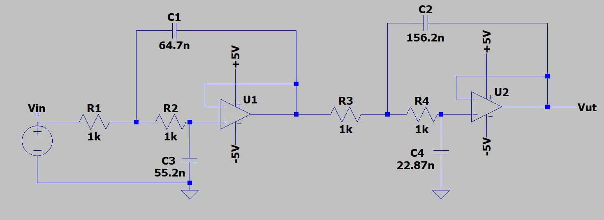
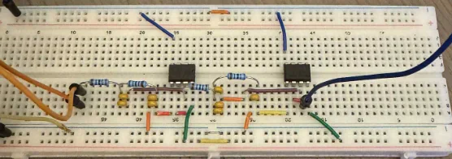

DP8 Anti-aliasing filter
Fourth-order Butterworth anti-aliasing filter with two cascaded Sallen-Key stages, for an ADC with a 7.1 kHz sampling frequency.

Result
- Calculated cutoff frequency 2.66 kHz, measured about 2.6 kHz.
- Around 10 dB attenuation at the Nyquist frequency of 3.55 kHz, which meets the requirement.
- Realized component values were within 4 percent of the calculated ones, and simulation and measurement agreed well.
Figures



